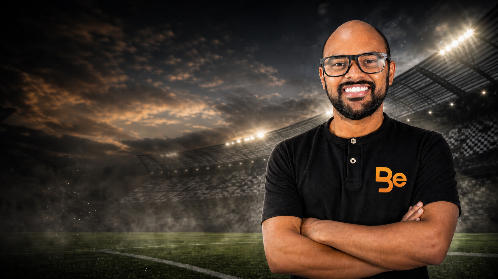

FALA BEM! · SELEÇÃO BRASILEIRA
Sem um meia armador, o Brasil perde a conversa do jogo
Na estreia do novo ciclo contra a Austrália, vencer pode não ser suficiente: a Seleção precisa voltar a ter alguém para pensar e criar.
Ler opinião completaFALA BEM! · OPINIÃO
Uma editoria para ideias, vivências e perguntas que vão além do resultado.
Conheça as colunasA EDITORIA
O Fala Bem! abre espaço para pontos de vista sobre esporte, cidade, treino, torcida e acesso. Textos diretos, assinados e com respeito a quem lê.

FALA BEM! · SELEÇÃO BRASILEIRA
Na estreia do novo ciclo contra a Austrália, vencer pode não ser suficiente: a Seleção precisa voltar a ter alguém para pensar e criar.
Ler opinião completaEM CONSTRUÇÃO
As primeiras pautas que vão dar voz a quem acompanha o esporte de perto.
CIDADE EM JOGO
Uma conversa sobre acesso, estrutura e o direito de ocupar a cidade.
SEM PLACAR
Rotina, bem-estar e pertencimento também fazem parte do jogo.

VOZ DA QUADRA
A CONVERSA É ABERTA
Envie uma ideia de pauta ou conte a história que você vê no esporte.
Falar com a redação